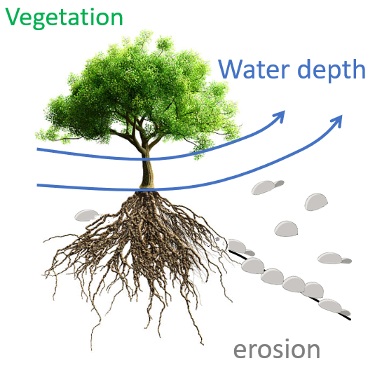

River Ecosystem Research

Discover how interactions between water, sediments, and vegetation induce chaos in river ecosystems.
📖 Read Article: River Ecomorphodynamic Models Exhibit Features of Nonlinear Dynamics and Chaos Cunico et al. (2024) — Geophysical Research Letters | Wiley Online LibraryDiscover how these interactions generate bistability and multistability within the system.
📖 Read Article: Multi-stability in a spatial river ecosystem model Cunico et al. (2026) — Environmental Research Letters | IOPscience